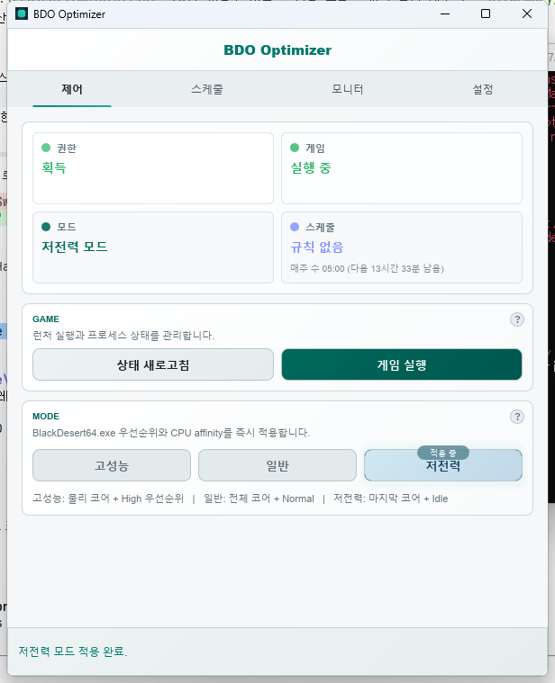
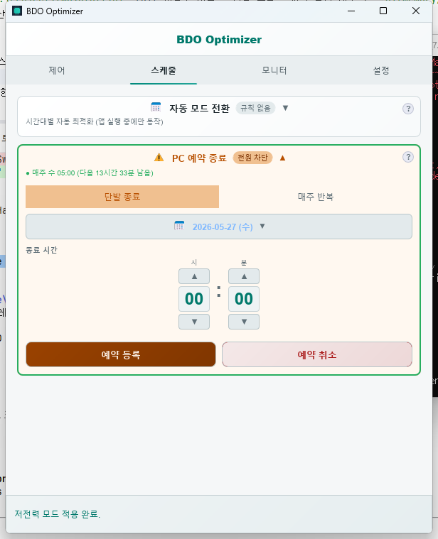
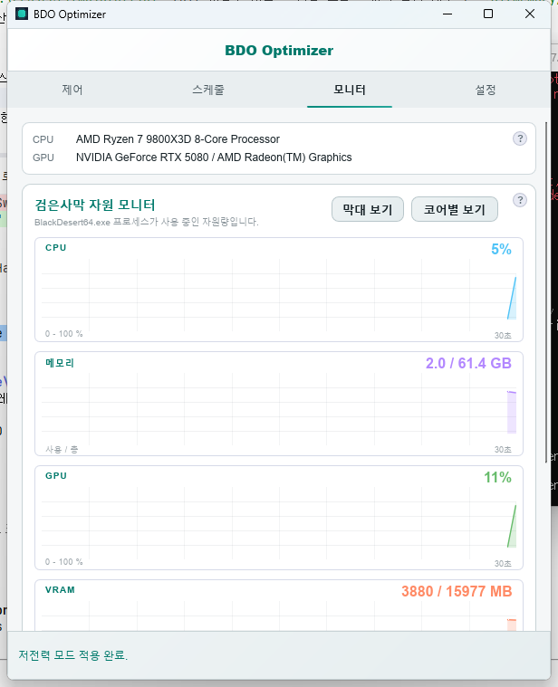
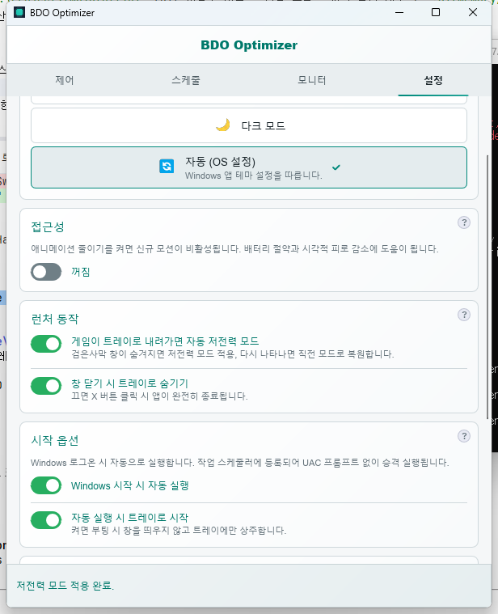

검은사막(BlackDesert64.exe)의 실행 · CPU 우선순위/affinity 최적화 · 시간표 자동 모드 전환 · PC 예약 종료 · 시스템 트레이 상주 · 실시간 자원 모니터링을 한 화면에서 관리하는 단일 실행 파일입니다.
기존 Windows 배치 스크립트 기반 런처를 Rust + Slint UI로 재구현했습니다.
| 기능 | 설명 |
|---|---|
| 모드 최적화 | 고성능 / 일반 / 저전력 3-state. CPU 우선순위 + affinity 즉시 조정. 게임가드 우회를 위한 단기 재적용 5회 자동. |
| P/E-core 자동 분리 | Alder Lake+ 하이브리드 CPU에서 EfficiencyClass 인식 → 고성능은 P-core 전체, 저전력은 E-core만 사용. |
| 자동 스케줄 | 시간대별 모드 자동 전환(매일/평일/주말/특정 날짜). |
| PC 예약 종료 | 단발 + 매주 반복 두 종류. Windows 작업 스케줄러 기반이라 앱 종료 후에도 동작. |
| 실시간 자원 모니터 | CPU/메모리/GPU/VRAM/Disk/FPS + 코어별 affinity 시각화. 1초 갱신. |
| 시스템 트레이 상주 | X 버튼 시 트레이로 숨김. 더블 클릭 복원. 메뉴에서 모드 즉시 전환 + 현재 모드 표시. |
| 자동 시작 | 로그온 시 UAC 없이 자동 실행. --minimized 옵션으로 트레이 시작. |
| 단일 인스턴스 | 두 번째 실행은 기존 창을 자동으로 포그라운드. |
배포 zip을 해제하면 bdo-optimizer-launcher.exe · 사용설명.pdf · SHA256SUMS 세 파일이 나옵니다. PowerShell에서:
cd 다운로드_폴더 Get-FileHash .\bdo-optimizer-launcher.exe -Algorithm SHA256 Get-Content .\SHA256SUMS
두 해시 값이 일치하면 무결성 OK입니다.
코드사이닝 미적용이라 첫 실행 시 Windows Defender SmartScreen 경고가 표시됩니다.
이후 실행에는 경고가 표시되지 않습니다.
관리자 권한 요청 UAC 프롬프트에 "예" 선택. 자동 시작 등록 후에는 UAC 없이 로그온 시 자동 실행됩니다.
.exe는 Program Files처럼 일반 사용자가 임의로 덮어쓰기 어려운 위치에 두는 것을 권장합니다. 사용자 프로필 / AppData / 임시 폴더 아래에서 실행 중인 경우 자동 시작 등록이 안전상 거부됩니다.
관리자 권한 · 게임 실행 · 현재 모드 · 자동 스케줄 4개 상태를 한눈에 확인하고 모드를 즉시 적용합니다. 게임이 실행 중이고 관리자 권한이 있을 때만 모드 버튼이 활성화됩니다.

자동 모드: 시간대별 모드 자동 전환 규칙 등록. 매일/평일/주말/특정 날짜 4종 + 우선순위(특정 날짜가 가장 높음).
PC 예약 종료: 단발(날짜+시간) 또는 매주 반복(요일+시간). 등록 후에는 앱을 종료해도 Windows 작업 스케줄러가 종료를 실행합니다.

게임 실행 중일 때 1초 간격으로 CPU · 메모리 · GPU · VRAM · Disk I/O · FPS · 코어별 CPU 사용률을 갱신합니다. 코어별 막대/sparkline에서 affinity가 활성화된 코어는 청록으로 강조됩니다.

테마(라이트/다크/Windows 자동) · 애니메이션 줄이기 · 런처 동작(자동 트레이/X 버튼) · 시작 옵션(자동 시작/트레이 시작) · 런처 경로 · 진단(로그 폴더 열기) 카드를 제공합니다.

X 버튼 또는 자동 트레이 발화 시 작업 표시줄 우측 트레이에 상주합니다. 트레이 아이콘 우클릭 메뉴에서 현재 모드가 체크 표시되어 한눈에 확인 가능하고, 클릭으로 모드를 즉시 전환할 수 있습니다. 메뉴 항목: 창 토글 · 고성능/일반/저전력 모드 · 예약 취소 · 종료.
last_user_mode)가 자동 적용예: "평일 22:00-02:00 고성능 / 그 외 저전력"
단발: 스케줄 탭 → "PC 예약 종료" 아코디언 → "단발 종료" 선택 → 날짜(달력) + 시간 → 등록
매주 반복: "매주 반복" 선택 → 요일 체크(MON-SUN) + 시간 → 등록
등록 후 활성 상태가 카드에 표시되고 "단발 취소" 또는 "반복 취소" 버튼으로 개별 해제 가능합니다.
| 증상 | 원인 / 해결 |
|---|---|
| 모드 적용 시 "프로세스를 찾을 수 없음" | 검은사막이 실행 중이 아님. 게임을 먼저 실행하고 제어 탭에서 "상태 새로고침" 클릭. |
| FPS가 "세션 미시작" 또는 "ETW 이벤트 없음" | ETW DXGI provider 권한 문제. 앱 재시작 또는 관리자 권한 재확인. 다른 ETW 도구(GPU-Z, MSI Afterburner 등) 종료 후 재시도. |
| 자동 시작이 등록되지 않음 | .exe가 사용자 프로필 / AppData / 임시 폴더 아래에 있어 안전상 거부. Program Files 또는 관리자 전용 위치로 이동 후 재시도. |
| SmartScreen 경고 반복 | .exe를 옮기거나 새 버전을 다운로드한 경우 다시 표시될 수 있음. "추가 정보" → "실행"으로 통과. |
| P-core만 활성화되지 않음 | Alder Lake+ 이전 CPU는 hybrid 미지원. 기존 SMT 짝수 비트 affinity로 fallback. 정상 동작. |
| 로그 위치 확인 | 설정 탭 → "진단" 카드 → "로그 폴더 열기" 또는 %LOCALAPPDATA%\bdo-optimizer-launcher\logs\ |
RUST_LOG=debug 설정 후 앱 재실행 시 모든 모듈의 debug 로그가 파일에 기록됩니다.
본 앱은 검은사막의 외부 도구(클라이언트 비변조)입니다. CPU 우선순위/affinity 조정은 Windows API의 표준 기능이며, 게임 클라이언트의 메모리 · 패킷 · 파일을 수정하지 않습니다. 다만 게임 운영 정책상 "외부 도구 사용"의 회색 지대에 있을 수 있으므로 사용 책임은 사용자에게 있습니다.
게임가드는 외부에서 priority/affinity가 변경되면 일정 시간 후 원복하려는 경향이 있어, 앱은 모드 적용 직후 0.5초/1초/2초/5초/10초에 동일 모드를 5회 자동 재적용해 사용자가 의도한 설정을 유지하려 시도합니다.